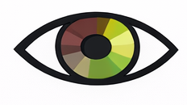
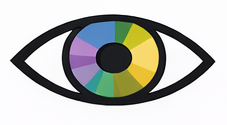
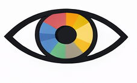
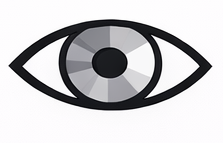

Types of Color Blindness

Protanopia
Red color deficiency
People with protanopia have difficulty seeing red light. Red colors may appear dark brown or black and can be confused with green.

Deuteranopia
Green color deficiency
This is the most common type of color blindness. People have difficulty distinguishing greens, reds, and yellows.

Tritanopia
Blue color deficiency
People with tritanopia have trouble seeing blue and yellow colors. Blue may appear greenish.

Achromatopsia
Complete color blindness
This rare condition means a person sees no color at all. Everything appears in shades of gray.